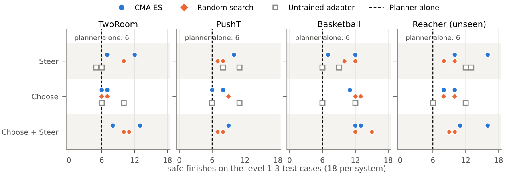
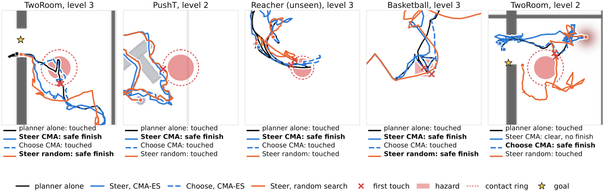

A small evolved adapter can make a frozen planner safer without retraining it. We evolve two kinds, each starting as an exact copy of the planner. Steer is a residual: it adds a sideways push to each move, away from the hazard. Choose is a re-ranker: it reorders the planner's own candidate plans and swaps in a clearer one when the planner's choice comes too close. Hazards are placed against the planner's path at four graded levels, from clear of the path to an unavoidable one on the goal. A noticeable result we found was that the adapters transfer. Evolved on three systems driven by two different planners, they ran unchanged on a fourth system that search never saw: every selected adapter beat the planner alone, and the best rose from 6 to 16/18 with no case lost. Untrained adapters gained there too, so it is the design that transfers. On the training systems, safe finishes rose from 18 of 54 to between 23 and 34 (11 of 12 significant). The price is some unfinished tasks. CMA-ES held a slight edge over random search, all of it on the unseen system, yet one untrained adapter did nearly as well as both: the design, not the optimizer, did most of the work. On Block Plucking, an arm task, search matched the planner alone.
One adapter is shared across TwoRoom, PushT (LeWM) and Meta-World basketball (TD-MPC2). Reacher is held out of search entirely and used only in the test, where the adapters ran unchanged.
Unseen system, best
6 → 16
safe finishes of 18; no case lost
Unseen system
12 / 12
selected adapters beat the planner alone
Training systems, best
18 → 34
safe finishes of 54
Training systems
11 / 12
significant gains over the planner alone

The dashed line is the planner alone. Nearly every selected adapter sits to its right on every system, including Reacher, which search never saw. Blue: CMA-ES; orange: random search; grey squares: untrained adapters.

Recorded paths, one test case per panel; a red × marks the first touch. In the first four panels Steer from CMA-ES goes around the hazard and finishes safely; in the last, Choose does.
@misc{mohan2026evolve,
title = {Evolve, Don't Retrain? Safety Adapters for Frozen Planners on Graded Hazards},
author = {Mohan, Sachin},
year = {2026},
note = {University of the Witwatersrand},
url = {https://sachin2911.github.io/evolveDontRetrain/}
}